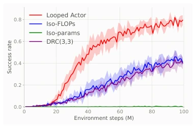
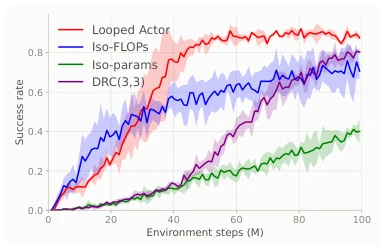
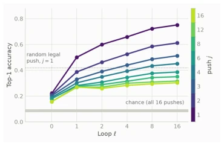
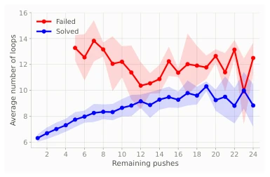
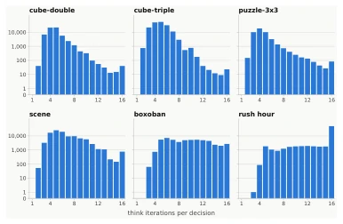
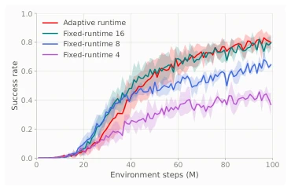

Looped Actor: Depth-Recurrent Reasoning Models for Reinforcement Learning
T. Konstantin Rusch, Tim Seyde, Jared Boyer, Zach J. Patterson, Daniela Rus abspdf
论文点评Review
这篇论文给强化学习（RL）的“死脑筋”政策上了一课：别总是一刀切地算到底，得学会看人下菜碟。Looped Actor 这招“深度循环推理”确实有点东西，它用一套参数反复迭代，像极了人类思考时的“灵光一闪”过程，而不是死板的流水线。在需要多步规划的 Boxoban 和 Rush Hour 里，它用 1/16 的参数干翻了参数量大得多的基线，这性价比简直比买彩票还高。不过，别高兴太早，这方法在简单任务上也就是“平手”，并没有点石成金。而且，理论上的“自适应计算”优势在现实中能不能完全兑现，还得看模型是不是真的学会了“偷懒”，而不是单纯地多转几圈。毕竟，如果模型只是把“思考”变成了“发呆”，那这循环再深也没用。
This paper teaches a lesson to the "stubborn" policies of Reinforcement Learning (RL): do not always calculate to the end in a one-size-fits-all manner; learn to tailor the approach to the situation. The "deep recurrent inference" technique of Looped Actor is indeed effective; it iterates repeatedly using a single set of parameters, resembling the "aha moment" process of human thinking, rather than a rigid assembly line. In Boxoban and Rush Hour, which require multi-step planning, it defeated baselines with much larger parameter counts using only 1/16 of the parameters; this cost-performance ratio is simply higher than buying a lottery ticket. However, do not get too excited too early; this method is merely a "draw" on simple tasks and does not turn lead into gold. Moreover, whether the theoretical advantage of "adaptive computation" can be fully realized in reality depends on whether the model has truly learned to "slack off", rather than simply spinning a few more times. After all, if the model merely turns "thinking" into "spacing out", then no matter how deep the loop is, it is useless.
Decisions in Reinforcement Learning often vary in difficulty; some require only intuition, while others require deep thought. Existing policies typically adopt a fixed computation amount (fixed-runtime), running through all layers regardless of how simple the state is, leading to computational waste; or rely on explicit search algorithms (such as MCTS), incurring huge computational overhead. Dehghani et al. (2018) proposed the Universal Transformer which opened the way for recurrent inference, but it was mainly applied to language modeling and did not delve into RL decision-making. Ghugare et al. (2026) proved that in specific MDPs, adaptive computation strategies can have computational costs far lower than fixed-runtime strategies while maintaining optimal returns, but previously there was a lack of specific architectures to implement this state-dependent computation in RL. Furthermore, existing deep recurrent policies (such as DRC) often fix the number of iterations and cannot dynamically adjust the computation depth based on the current state, leading to low efficiency in complex planning tasks. This paper aims to fill this gap by introducing a dynamic recurrent mechanism, enabling RL agents to learn to "think as much as needed".
方法Method
Looped Actor 的核心是一个基于 Transformer 的深度循环推理模型，其整体流程是：输入状态 s 和可选目标 g，通过共享的 Transformer 块 f_θ 反复迭代更新潜在表示 z，直到动作分布稳定即停止。具体创新点如下：1. 动态循环机制：不同于传统固定层数，模型通过监测连续迭代间动作分布的 KL 散度（D_KL）是否低于阈值 τ 来决定何时停止（Halt）。这使得模型能根据状态复杂度自适应分配计算资源。2. 参数共享与深度扩展：模型复用同一组参数 f_θ 进行多次迭代，有效增加了模型深度（Depth），但参数量保持不变，实现了“小参数，大计算”。3. 稳定性保障：为解决深层循环中的梯度消失或发散问题，采用了预归一化（Pre-normalization）结合残差缩放（Residual Scaling）策略，并引入深度卷积以增强局部特征混合。4. 训练策略：支持在线（PPO）和离线（GCIQL）强化学习。在训练时，通过截断或不截断的 BPTT 传播梯度，且将停止步骤视为不可微，仅对已执行的循环进行梯度更新。这种设计使得 Actor 能够像“思考”一样，逐步收敛到最优动作分布。
The core of Looped Actor is a Transformer-based deep recurrent inference model; its overall process is: input state s and optional goal g, repeatedly iterate and update latent representation z through shared Transformer blocks f_θ, until the action distribution stabilizes and then stops. Specific innovations are as follows: 1. Dynamic recurrent mechanism: Unlike traditional fixed layer counts, the model decides when to stop (Halt) by monitoring whether the KL divergence (D_KL) of the action distribution between consecutive iterations is below threshold τ. This allows the model to adaptively allocate computational resources based on state complexity. 2. Parameter sharing and depth expansion: The model reuses the same set of parameters f_θ for multiple iterations, effectively increasing model depth (Depth), but the parameter count remains unchanged, achieving "small parameters, large computation". 3. Stability guarantee: To solve the gradient vanishing or divergence problems in deep loops, pre-normalization combined with residual scaling strategies are adopted, and depth convolution is introduced to enhance local feature mixing. 4. Training strategy: Supports online (PPO) and offline (GCIQL) reinforcement learning. During training, gradients are propagated through truncated or untruncated BPTT, and the stopping step is treated as non-differentiable, updating gradients only for executed loops. This design allows the Actor to converge gradually to the optimal action distribution like "thinking".
Experiments cover 6 environments totaling 22 tasks, including Boxoban, Rush Hour (requiring multi-step planning), and OGBench (continuous control). Baselines include single-step Transformer with same parameter count (Iso-Parameters), 16-layer stacked Transformer with same computation amount (Iso-FLOPs), and deep recurrent LSTM (DRC). Results show: On Boxoban, Looped Actor success rate is approximately twice that of Iso-FLOPs, and far exceeds Iso-Parameters; on OGBench, Looped Actor performance is comparable or slightly better than Iso-FLOPs. Key findings: 1. Planning ability: Through probe analysis, it is found that as the number of loops increases, the model's prediction accuracy for the optimal solution monotonically increases, proving that it indeed builds multi-step plans during iteration. 2. Computation allocation: When successfully solving Boxoban, the more remaining box-pushing steps, the more loop iterations, showing strong correlation; when failing, this pattern does not exist. 3. Efficiency: The adaptive model has fewer than 16 loop iterations in 95% of trajectories, achieving over 60% inference acceleration compared to fixed 16-loop iterations.

Figure 1: Boxoban success rate on unfiltered games during training for Looped Actor, Iso- FLOPs, Iso-Parameters, and DRC(3, 3) mod- els.

Figure 2: Rush Hour success rate during training for Looped Actor, Iso-FLOPs, Iso- Parameters, and DRC(3, 3) models.

Figure 3: Accuracy in decoding the optimal plan from Looped Actor latents on Boxoban.

Figure 4: Loop count for individual states plot- ted against the corresponding number of box pushes, for both failed and solved episodes.

Figure 5: Histograms of loop iterations of Looped Actor for all 6 environments consid- ered in this paper.

Figure 6: Adaptive vs Fixed-runtime success rates for Looped Actor on Boxoban.